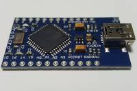
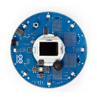
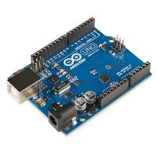

Az Arduino egy egykártyás mikrovezérlő, Atmel AVR, ARM Cortex-M és Intel Curie processzorral. Az Arduino hivatalos oldala: https://www.arduino.cc/. Az Arduino tulajdonképpen egy elektronikai fejlesztő eszköz, amely egy Arduino Board-ból és egy integrált fejlesztői környezetből áll.

Az Arduino IDE egy Java nyelven írt, kereszt-platformos program, amelyben programokat készíthetünk és töltehtünk fel az Arduino Boardra. Az Arduino programozási nyelve C/C++ alapú.
Arduino Board-ból többféle változat áll rendelkezésre. Ezek eltérnek egymástól a mikrovezérlő típusában, a belső memóriában, a be és kimeneti eszközök számában. Némelyik rendlelkezik beépítve Ethernet, Wif-fi vagy Bluetooth eszközzel.

Az Arduino úgynevezett Shield-ekkel egészíthető ki. Ezek egyszerű elektronikai áramkörök, amelyeket könnyedén illeszthetünk a borad-okhoz.
